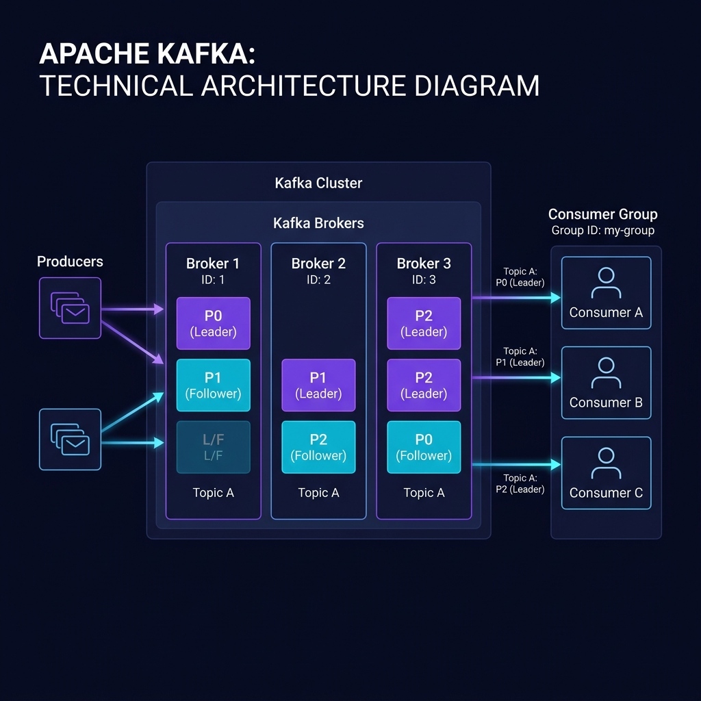
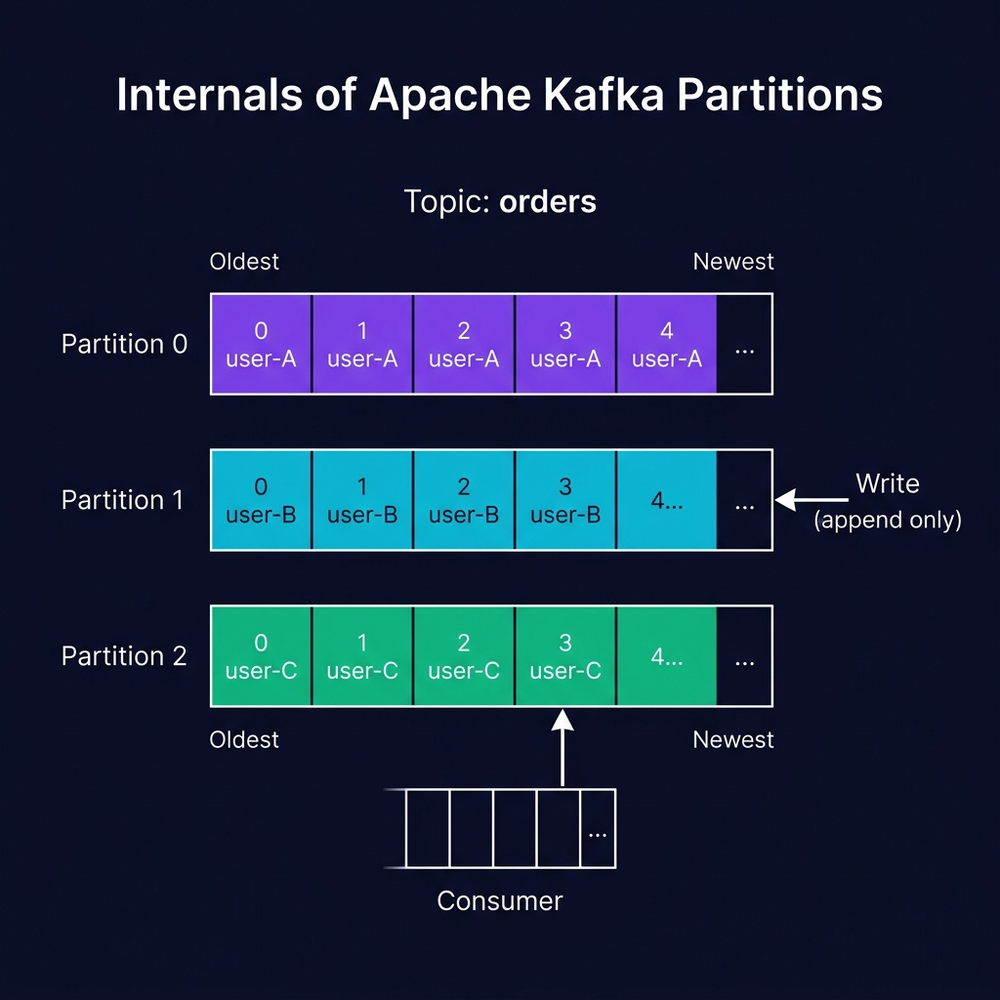

Apache Kafka
The digital equivalent of a central nervous system for your data. A highly scalable, fault-tolerant distributed event streaming platform.
1. What is Event Streaming?
Event streaming is the practice of capturing data in real-time from event sources like databases, sensors, mobile devices, cloud services, and software applications in the form of streams of events.
Technically, Kafka combines three key capabilities:
- Publish and Subscribe: Read and write streams of events.
- Storage: Store streams of events durably and reliably for as long as you want.
- Processing: Process streams of events as they occur or retrospectively.
An event records the fact that "something happened" in the world or in your business. Conceptually, it consists of:
- Key: (Optional) Used for routing, e.g., "Alice"
- Value: The actual data, e.g., "Made a payment of $200 to Bob"
- Timestamp: When the event occurred
- Headers: (Optional) Metadata key-value pairs
2. Architecture Overview
Understanding how Brokers, Topics, Producers, and Consumers interact.

Figure 1: High-level Kafka Architecture. Producers write to topics, and Consumers within a Consumer Group read from them. Data is partitioned across multiple Brokers.
Kafka runs as a cluster of one or more servers called Brokers. These servers form the storage layer.
The cluster is highly scalable and fault-tolerant. If a broker fails, other brokers take over its work to ensure continuous operation without data loss. Historically managed by ZooKeeper, Kafka is moving towards KRaft (Kafka Raft) for self-managed metadata quorum.
Events are organized and durably stored in Topics. Think of a topic as a category or feed name.
Topics in Kafka are multi-producer and multi-subscriber. Events in a topic are not deleted after consumption; instead, Kafka retains them based on a configured time (e.g., 7 days) or size limit.
3. Partitions Deep Dive
The secret to Kafka's massive scalability and ordered processing.

Figure 2: Internals of a Kafka Topic. It is divided into multiple partitions. Events with the same key go to the same partition, guaranteeing order.
Topics are partitioned, meaning a topic is spread over a number of "buckets" located on different Kafka brokers. This distributed placement allows client applications to read and write data from many brokers simultaneously.
How Partitions Work:
- Append-Only: When a new event is published, it is appended to the end of one of the topic's partitions. It is an immutable log.
- Offsets: Each event in a partition receives a sequential ID number called an offset. The offset uniquely identifies an event within a partition.
- Ordering: Kafka only guarantees the order of events within a single partition, not across the entire topic.
- Key-Based Routing: If an event has a key (e.g., "user-A"), a hash of that key determines the partition. This guarantees that all events for "user-A" end up in the exact same partition, ensuring ordered processing for that specific entity.
Replication:
For fault tolerance, every topic partition can be replicated across multiple brokers. A replication factor of 3 means there are 3 copies of the data.
- Leader: One replica acts as the leader. All read and write requests for that partition go through the leader.
- Followers: The other replicas passively replicate the leader's data. If the leader fails, a follower automatically becomes the new leader.
4. Producers and Consumers
Producers publish events to topics. They automatically know which broker and partition to write to. Delivery semantics can be tuned:
- Fire-and-forget: Fast, but risks data loss (acks=0).
- Leader acknowledgment: Waits for the leader to write the data (acks=1).
- Full acknowledgment: Waits for the leader and all in-sync replicas to write the data (acks=all). Safest.
Consumers read events from topics. They are organized into Consumer Groups.
- A consumer group acts as a single logical subscriber.
- Each partition in a topic is consumed by exactly one consumer within the group.
- If you have more consumers than partitions, some consumers will sit idle. This is how Kafka scales consumption horizontally.
- Consumers track their progress by committing their current offset back to Kafka.
5. When to Use Kafka
Reference: Essential CLI Commands
Quick reference for common administrative tasks.
| Task | Command Example |
|---|---|
| Create a topic | kafka-topics.sh --create --topic my-topic --partitions 3 --replication-factor 2 --bootstrap-server localhost:9092 |
| List topics | kafka-topics.sh --list --bootstrap-server localhost:9092 |
| Describe a topic | kafka-topics.sh --describe --topic my-topic --bootstrap-server localhost:9092 |
| Produce messages | kafka-console-producer.sh --topic my-topic --bootstrap-server localhost:9092 |
| Consume messages | kafka-console-consumer.sh --topic my-topic --from-beginning --bootstrap-server localhost:9092 |
| Check consumer lag | kafka-consumer-groups.sh --describe --group my-group --bootstrap-server localhost:9092 |